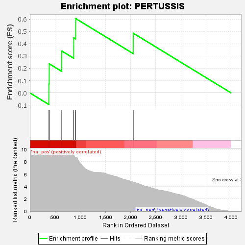
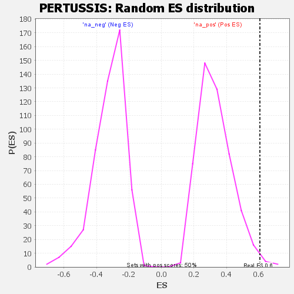

| | | Dataset | GSEA RNK clr Maaslin2 MucosalvsLuminal KO - Duodenum.rnk |
| Phenotype | NoPhenotypeAvailable |
| Upregulated in class | na_pos |
| GeneSet | PERTUSSIS |
| Enrichment Score (ES) | 0.6063226 |
| Normalized Enrichment Score (NES) | 1.8185308 |
| Nominal p-value | 0.012 |
| FDR q-value | 0.046939023 |
| FWER p-Value | 0.54 |
Table: GSEA Results Summary

Fig 1: Enrichment plot: PERTUSSIS
Profile of the Running ES Score & Positions of GeneSet Members on the Rank Ordered List

Fig 2: PERTUSSIS: Random ES distribution
Gene set null distribution of ES for PERTUSSIS